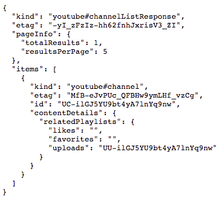
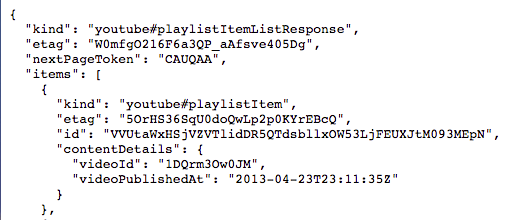

透過Youtube Data API，抓取影片留言的資料，最後再把資料存到PostgreSQL。
這個API的方式是透過不同的網址組合進入頁面獲取資料，想要什麼資料就要依不同的網址。
***完整的腳本連結
第一步驟：
我已經提前建立好資料庫了(用的是PostgreSQL，)這邊直接做跟資料庫連接。
工作表的欄位名稱依序是”video_id”、”title”及”comment”。
1 | import psycopg2 |
第二步驟：頻道ID、影片清單ID
- 首先需要頻道的”頻道ID”，而獲取的方式相當簡單，進到頻道首頁後，複製網址列最後串文字”UC-ilGJ5YU9bt4yA7lnYq9nw”。如果進到首頁網址列不是長下面這樣，可以先隨便進到一個影片，然後點選頻道的首頁連結到一樣的畫面，你就會發現這次網址列會出現ID了。
(https://www.youtube.com/channel/UC-ilGJ5YU9bt4yA7lnYq9nw) - 接著要取得頻道的”影片清單ID”才能取得”每個影片的ID”。下圖中最下面的uploads就是影片清單的ID。
 - 參考下方script第3行，這是第一個要進入的網址列來獲取影片清單ID(uploads)。
- 最後就是用requests來爬取頁面。
1
2
3
4
5
6YT_API_KEY = "自己的YT API KEY" #要申請
channel_id = input("Enter channel ID")
video_list_id = f"https://www.googleapis.com/youtube/v3/channels?part=contentDetails&id={channel_id}&key={YT_API_KEY}"
r_1 = requests.get(video_list_id) #取得影片id
data_1 = r_1.json()
uploads_id = data_1['items'][0]['contentDetails']['relatedPlaylists']['uploads']第三步驟：影片ID
接著就用上一步驟取得的影片清單ID(uploads)進一步地獲得”每個影片的ID”(加雙引號是因為有時會錯亂XD一直IDID的)。
1
2
3video_all_id = f"https://www.googleapis.com/youtube/v3/playlistItems?part=contentDetails&maxResults=5&playlistId={uploads_id}&key={YT_API_KEY}" #maxResults指你一次要抓取的影片數量
r_2 = requests.get(video_all_id)
data_2 = r_2.json()第四步驟：影片標題&留言
影片ID取得後就可以開始抓想要的資料了，這邊我只抓影片標題跟留言。
(14行)由於videoID在items的值裡面，所以我的做法是用loop的方式取出每個videoID，然後再透過第3行網址取得留言資料。6行)接著就是用requests爬取頁面資料並儲存成json格式。
(5
(712行)抓取video_id跟留言資料。22行)最後將title跟comment兩個dict結合，上傳到資料庫裡。
(14行)若要取得影片標題得透過另一個網址。
(211
2
3
4
5
6
7
8
9
10
11
12
13
14
15
16
17
18
19
20
21
22
23for i in data_2["items"]:
each_video_id = i["contentDetails"]["videoId"]
video_comment = f"https://www.googleapis.com/youtube/v3/commentThreads?part=snippet&videoId={each_video_id}&key={YT_API_KEY}"
r_comment = requests.get(video_comment)
data_comment = r_comment.json()
video_id = data_comment["items"][0]['snippet']['videoId']
all_comment = []
for j in data_comment["items"]:
comment = j['snippet']['topLevelComment']['snippet']['textDisplay']
all_comment.append(comment)
id_comment = {"video_id": video_id, "comment": all_comment}
video_title = f"https://www.googleapis.com/youtube/v3/videos?part=snippet,statistics&id={each_video_id}&key={YT_API_KEY}"
r_3 = requests.get(video_title) # 影片標題
data_3 = r_3.json()
title = {'video_id': data_3['items'][0]['id'], 'title': data_3['items'][0]['snippet']['title']}
title.update(id_comment)
cur.execute(q, title)
con.commit()
con.close()